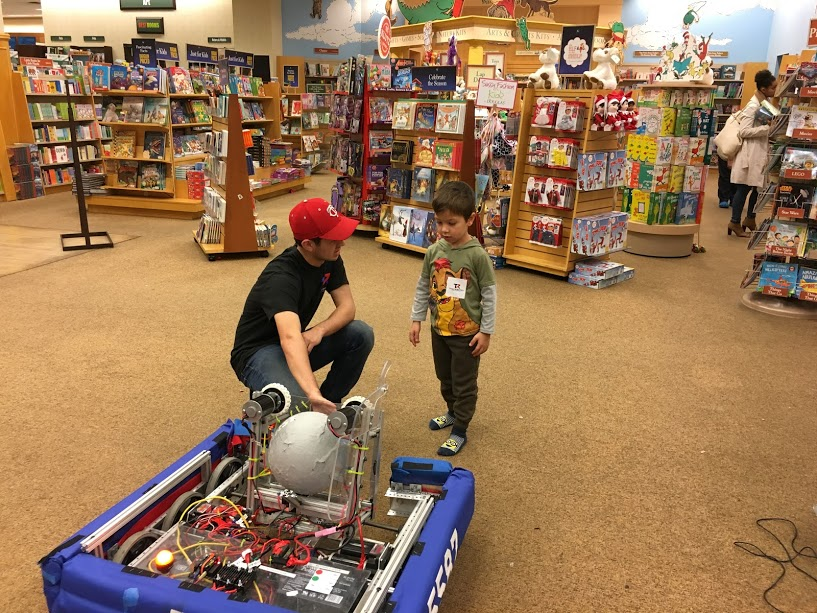
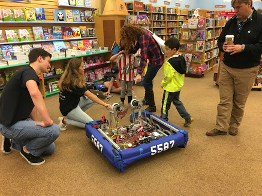
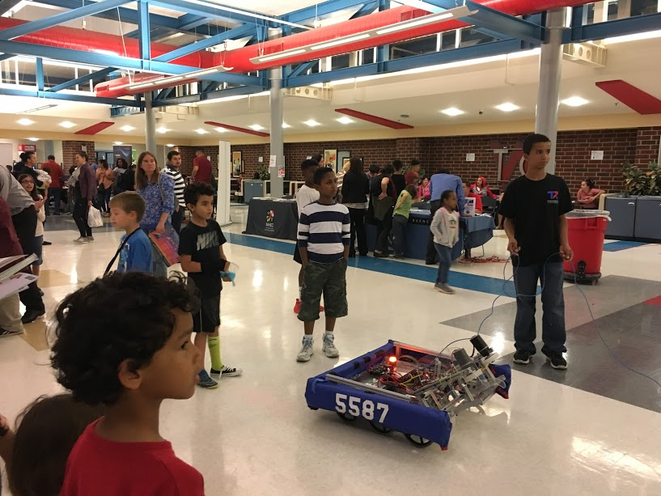
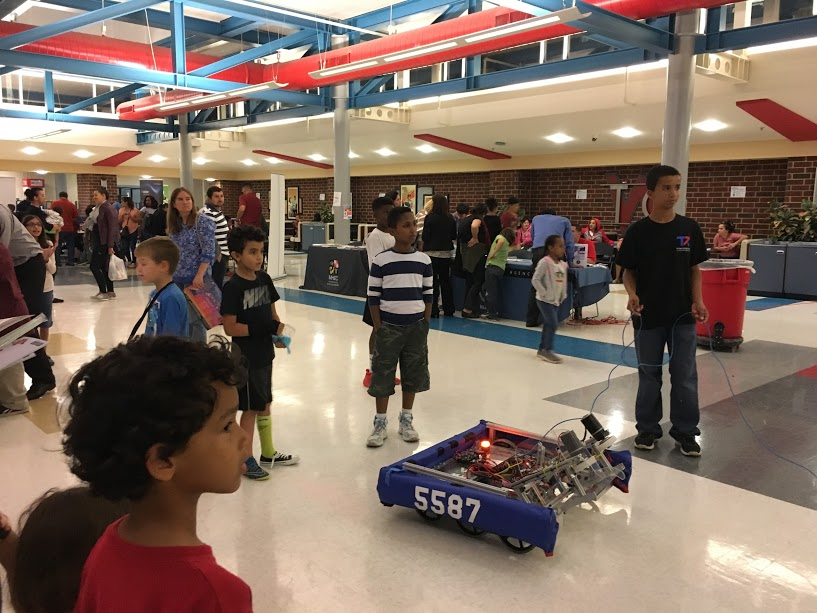

Outreach
Team 5587 has been involved in many different activities in order to both increase awarness of FIRST and promote the advancement of youth in STEM. Our team believes that in order to follow the principles of FIRST, we must give back to the community without which we would not exist. From teaching youth about STEM opportuinities to creating educational, hands-on learning experinces, our team is commited to giving back to our community.
Barnes and Noble Mini Maker fair
During the 2016 off season, our team was involved in the second annual Barnes and Noble Mini Maker Faire. At the event, our team demonstrated our robot to intrested youth and parents and allowed personal interaction with the robot. We also provide detailed descriptions of the functions of the robot, duties of the subteams, and the team dynamic.
 FLL mentorships
Titan Robotics Team Members hosted a youth FIRST Lego League Team at Charles Ramsey School in Alexandria. Over the course of the FLL season, team members taught 20 underprivleged students about the basics of programing robots.
Women in STEM
Several members of our team are involved in the Women in STEM club, where members are encouraged to persue education or careers in the Science, Technology, Engineering, and Math. Members of the team involved in this club actiely promote the diverisification of our team, and practice the princples of FIRST.
Women in Technology
Members of our team presented the robot at Women in Science event duing the 2016 off season. At the event, students learned about future career paths in the STEM fields and the pathways they should follow if they wish to continue persuing STEM.
T.C. STEM Night and College Fair
Amid dozens of hands-on exhibits featuring rockets, robots, doodads and devices for all ages plus bilingual parent workshops about STEM careers, college admissions, and financial aid, Titans Robotics Team 5587 members gave live demonstrations of their 2015/16 FIRST Competition Robot "Caligula". Team members spoke with lower and middle school students and families about FIRST Lego League opportunities in addition to sharing their Titan Robotics experiences with the greater community.

 
